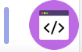

ethical hacking | סייבר ואבטחת מידע
ethical hacking | סייבר ואבטחת מידע
system administration | ניהול רשתות ומחשוב
seo/social/sales&marketing | שיווק דיגיטלי
qa & automation | בדיקת תוכנה
ui/ux | עיצוב גרפי
dot net/java/php | full stack פיתוח תוכנה
ios/andriod | פיתוח אפליקציות מובייל
embedded | פיתוח מערכות משובצות מחשב
ethical hacking | סייבר ואבטחת מידע
system administration | ניהול רשתות ומחשוב
seo/social/sales&marketing | שיווק דיגיטלי
qa & automation | בדיקת תוכנה
ui/ux | עיצוב גרפי
dot net/java/php | full stack פיתוח תוכנה
ios/andriod | פיתוח אפליקציות מובייל
embedded | פיתוח מערכות משובצות מחשב


. עשית את הצעד הראשון בהסבה מקצועית לענף ההיי-טק.ניצור איתך קשר בהקדם

.אני מאשר קבלת עדכונים ומבצעים מהייפראקטיב בכפוף לתקנון
ethical hacking | סייבר ואבטחת מידע
system administration | ניהול רשתות ומחשוב
seo/social/sales&marketing | שיווק דיגיטלי

qa & automation | בדיקת תוכנה
ui/ux | עיצוב גרפי
dot net/java/php | full stack פיתוח תוכנה

ios/andriod | פיתוח אפליקציות מובייל
embedded | פיתוח מערכות משובצות מחשב
.הייפראקטיב הוקמה ב- 2004 על ידי צוות בראשות טל שחור, יזם היי-טק ותיק
צוות ההדרכה בחברה הינו מהוותיקים והמנוסים בישראל. חלקנו הקמנו בעבר בתי ספר להיי-טק אחרים, חלקנו עבדנו בתפקידי ניהול, שיווק והדרכה בבתי ספר אחרים
.לאורך השנים הכשרנו אלפי עובדים לענף ההי-טק בכל התמחות ומיומנות אפשרית
.לאורך השנים היינו תמיד חדשניים - היינו הראשונים ללמד באופן מקצועי טכנולוגיות חדשות
בית הספר היחיד שפיתח מערכות יעודיות ואימץ באופן מלא שיטות הדרכה מתקדמות מרחוק - שנים לפני שמישהו שמע על נגיף הקורונה
.העברנו קורסי הכשרה במודל המקובל בשוק - קורסים במגוון תחומים גדול המקבילים לקיים בשוק ובתשלום מראש
.תלפיות היי-טק מתמקד בהכשרה ארוכה ומעמיקה מאוד של אנשי פיתוח,במגוון גדול של טכנולוגיות ובמודל בו התלמידים לא משלמים כלל שכר לימוד ומתחייבים לעבוד אצלנו מספר שנים
כאשר מאות אלפי מובטלים מחפשים כיוון מקצועי ונושאים עיניהם אל תעשיית ההיי-טק, החלטנו להטות כתף, להיות החלוצים
ולהפוך לבית הספר היחיד, שמציע מסגרות הכשרה חסרות סיכון במודל ״לא עבדת לא שילמת״. הייפראקטיב הינה ״מכללת בוטיק״ - אנחנו סלקטיביים מאוד ומטפלים בכמות מצומצמת של מועמדים שמשכנעים אותנו שיש להם את מה שנדרש כדי לפתח קריירה משגשגת בענף ההי-טק
. אנו מלווים באופן צמוד את הבוגרים גם לאחר שהתקבלו לעבודה לאורך הקריירה שלהם - בעצות טובות, הפעלת קשרים כשנדרש ושרותי סוכן אישי צמוד - אנו רואים בבוגרינו משאב רב ערך לתעשית ההיי-טק והמשק הישראלי והם מקבלים את מלוא התמיכה לה הם ראויים בהתאם
+
אבחון,יעוץ ומיון
. לאורך השנים גיבשנו תהליך מדעי לבדיקת התאמה לתחומי העיסוק השונים בענף ההיי-טק :מועמדים רבים פונים אלינו לאחר שהתקבלו לקורסים בבתי ספר אחרים ומתאכזבים לקבל מאיתנו תשובה שלילית. חשוב להבין כי אנחנו מרוויחים רק כאשר מועמד מתקבל לעבודה ולכן נדרשים לבחינה מעמיקה בהרבה שבוחנת את פוטנציאל המועמד לעמוד ב-2 הדרישות המרכזיות לעבודה בתפקידים בענף ההיי-טק
.א. פרופיל אישיותי מתאים
.ב. יכולת טכנית וידע מקצועי מעמיק
. בשלב ראשון תגישו מועמדות דרך האתר. לאחר מכן יתקיים ראיון טלפוני ראשון שלאחריו תתבקשו להשלים פרטים ונתונים נוספים הנדרשים לשלב המיון הראשון. בשלב שני תקבלו מבדקי בית לפתרון בזמן מוגבל ומתואם מראש. בשלב שלישי תזומנו לראיון אישי עם מנהל ההדרכה ולמבדקי קבלה נוספים. אנחנו מעריכים את המועמדים שלנו ומתחייבים לחזור לכל מועמד עם תשובה
+
מסלול הכשרה
. למועמדים שיעברו בהצלחה את תהליכי האבחון ימונה מנהל תוכנית אישי. המנהל האישי ישב עם המועמד ויגדיר עימו מסגרת הכשרה מותאמת אישית. המסגרת תקבע בהתאם לשאיפות וההעדפות התעסוקתיות של המועמד, יכולת המועמד להתמקד אך ורק בלימודים או הצורך של המועמד ללמוד במסלול ערב במקביל להמשך עבודה במקום העבודה הנוכחי שלו ובהתאם לרקע הלימודי/אקדמי הקודם של המועמד וציוני בדיקות ההתאמה שלו
. כל מסלולי ההכשרה כוללים הן בסיס תיאורטי רחב, הן ידע טכני פרקטי והן פרוייקטים מעשיים. ההכשרות השונות מועברות בתקופת הקורונה בלימודים מרחוק תוך שילוב טכנולוגיות מתקדמות יחודיות שפותחו לאורך השנים בהייפראקטיב - הכשרות פרונטליות רגילות, מנטורינג על ידי אנשי מקצוע מהתעשיה, פרוייקטים אישיים, סדנאות מיוחדות בקבוצות קטנות
+
תהליך השיבוץ
. עם סיום ההכשרה, תעברו לטיפול מחלקת ההשמה - תעברו סדנת הכנה ואימון מתקדם לקראת ראיונות עבודה, תעברו סדרת ראיונות אצל לקוחות עד שתתקבלו לעבודה המיוחלת במקצוע אותו למדתם. רק לאחר שנקלטתם בעבודה תסדירו את תשלום שכר הלימוד על הקורס אותו עברתם
+
קריירה חדשה
. עשיתם את זה, נכנסתם לענף ההיי-טק. אתם עובדים באחת מחברות ההיי-טק המובילות בישראל. אנחנו עדיין עומדים לרשותכם לעזרה, ליתר בטחון. אם תרצו גם נסייע לכם כסוכן אישי להמשיך לקדם אתכם בענף לתפקידים ומשכורות גבוהים יותר לאורך הקריירה
!מה זאת אומרת לא עבדת? לא שילמת
?אני רוצה ללמוד אבל אין לי כסף, מה לעשות
? איפה יש לכם סניפים/ איפה אתם מלמדים
? מתי מתקיימים מיונים לקורסים השונים
? מתי מתחילים קורסים
? האם ניתן לעבוד תוך כדי ההכשרות
? איך אני יכול לדעת איזה מקצוע בהיי-טק מתאים לי
? סיימתי קורס בבית ספר אחר ולא מצאתי עבודה, מה אני יכול לעשות
? יש לי תואר אקדמי במדעי המחשב ולא מצאתי עבודה, מה אני יכול לעשות
? סיימתי קורס בבית ספר אחר ולא מצאתי עבודה, אני שוקל ללמוד תואר במדעי המחשב, זה יעזור לי
? אני מעונין להיות פרי לנסר, האם ניתן עדיין ללמוד אצלכם
? כבר יש לי מקום עבודה, האם ניתן עדיין ללמוד אצלכם
? איך מגישים מועמדות
? לא התקבלתי אצלכם ללימודים בתחום שעניין אותי, מה לעשות
? למרות שלא התקבלתי אצלכם, אני משוכנע ביכולות שלי ורוצה לחפש קורס במקום לימודי אחר. למה צריך לשים לב וממה צריך להזהר
? כמה מרוויחים בענף ההיי-טק
? בכל מיני בתי ספר הבטיחו לי ״התחייבות לעבודה״ ב״חוזה חתום״, זה אמיתי
? בכל מיני בתי ספר הבטיחו לי מלגה, זה אמיתי
? בית ספר/מכללה אקדמית מסויימת טוען שיש לו אחוז השמה מסויים של הבוגרים בענף. זה אמיתי


. עשית את הצעד הראשון בהסבה מקצועית לענף ההיי-טק.ניצור איתך קשר בהקדם
.אני מאשר קבלת עדכונים ומבצעים מהייפראקטיב בכפוף לתקנון
. עשית את הצעד הראשון בהסבה מקצועית לענף ההיי-טק.ניצור איתך קשר בהקדם
.אני מאשר קבלת עדכונים ומבצעים מהייפראקטיב